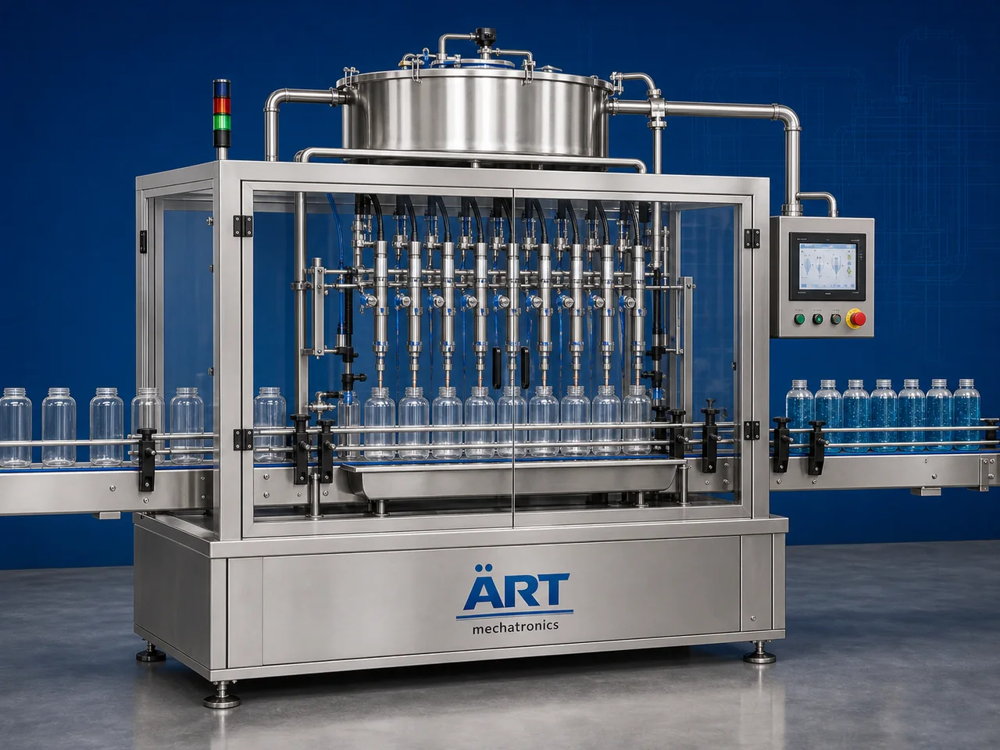

Servo Filling Machine (Automatic Servo Controlled Filling System)
A Servo Filling Machine, also known as a Servo Controlled Filling Machine, Automatic Liquid Filling Machine, Precision Servo Filler, or Servo Dosing Packaging System, is an advanced industrial packaging solution designed for automatic container feeding, precision liquid dosing, volumetric filling,…

About the Servo Filling
Servo filling systems are widely used for: ✔ Beverage bottle filling ✔ Oil container packaging ✔ Sauce and syrup filling ✔ Cosmetic liquid packaging ✔ Cream and gel filling ✔ Chemical liquid packaging ✔ Detergent filling operations ✔ Hygienic retail product packaging
The machine improves: ✔ Filling accuracy ✔ Production speed ✔ Product hygiene ✔ Packaging consistency ✔ Leak-free dispensing quality ✔ Production efficiency ✔ Product handling stability
Industrial servo filling machines use: ✔ Servo synchronized dosing systems ✔ Automatic container feeding systems ✔ PLC and HMI automation controls ✔ Precision flow control mechanisms ✔ Anti-drip nozzle systems
to automatically fill containers with superior volumetric accuracy and high production efficiency.
Servo filling machines are widely used in industries such as:
Beverage industries Food processing industries Cosmetic industries Pharmaceutical industries Chemical industries Detergent industries Lubricant industries FMCG industries
where accurate liquid filling, hygienic packaging, and high-speed production are essential.
The machine is highly suitable for: ✔ Beverage filling ✔ Oil bottle packaging ✔ Sauce and syrup filling ✔ Cosmetic product packaging ✔ Chemical liquid filling ✔ Semi-viscous and viscous product packaging
ART Mechatronics offers high-performance servo filling machines, engineered for continuous industrial operation, precision servo dosing performance, hygienic packaging quality, and reliable long-term packaging automation.
Working Principle of Servo Filling Machine
- 1. Empty Container Feeding Containers are automatically fed into filling line through synchronized conveyor systems.
- 2. Servo Dosing Process Machine uses servo controlled dosing systems to dispense highly accurate product quantities into containers.
Servo synchronization ensures smooth operation, precision filling, and stable product handling.
- 3. Product Filling Operation Machine handles: ✔ Beverages ✔ Oils ✔ Sauces ✔ Syrups ✔ Creams ✔ Gels ✔ Detergents
accurately and continuously.
- 4. Anti-Drip & Precision Filling Process Machine performs: Accurate volumetric filling Servo flow control Anti-drip filling Foam-free filling Leak-free dispensing
for hygienic and clean packaging quality.
- 5. Coding & Inspection Integration Optional systems include: Batch coding Date printing QR code printing Check weighing Vision inspection systems
- 6. Finished Container Discharge Filled containers discharged automatically for: Capping operations Labeling Cartoning Case packing
Types of Servo Filling Machines
- 1. Servo Liquid Filling Machine Designed for: ✔ Water, beverages, and liquid packaging applications
- 2. Servo Paste Filling Machine Suitable for: ✔ Sauces, creams, and viscous product packaging systems
- 3. Multi Head Servo Filling Machine Uses: ✔ High-speed industrial packaging systems
- 4. Inline Servo Filling Machine Designed for: ✔ Continuous industrial packaging operations
- 5. Servo Piston Filling Machine Suitable for: ✔ Precision high-accuracy filling operations
- 6. Fully Automatic Servo Filling System Designed for: ✔ Complete industrial packaging automation lines
Industries Using Servo Filling Machines
🥤 Beverage Industry Water, juices, flavored drinks, and liquid beverage packaging systems. 🍅 Food Processing Industry Sauces, syrups, mayonnaise, and food liquid packaging systems. 🧴 Cosmetic & Personal Care Industry Creams, lotions, gels, shampoos, and cosmetic liquid packaging systems. 💊 Pharmaceutical Industry Liquid medicines, syrups, and healthcare liquid packaging systems. ⚗️ Chemical Industry Industrial liquids, detergents, and chemical packaging systems. 🛒 FMCG Industry Consumer liquid and paste product packaging systems.
Features & Advantages
✔ High-speed automatic servo filling operation ✔ Accurate servo synchronized dosing systems ✔ Hygienic and anti-drip filling quality ✔ PLC and servo automation control systems ✔ Improves filling accuracy and packaging consistency ✔ Reduces product wastage and labor dependency ✔ Supports multiple container sizes and product viscosities ✔ Reliable long-term industrial performance ✔ Smooth and continuous packaging operation
Technical Highlights
Machine Type: Automatic servo filling machine Industrial liquid filling system Precision filling machine Packaging Material: PET bottles Glass bottles Plastic containers Industrial liquid containers Filling Integration: Servo dosing systems Flow meter filling systems Volumetric filling systems Precision liquid dispensing systems Features: PLC control system Servo synchronization Touchscreen HMI Anti-drip nozzles Automatic conveyor synchronization Applications: Beverages Oils Sauces Creams Syrups Detergents Automation: Semi-automatic Fully automatic industrial systems
Turnkey Servo Filling Solutions
ART Mechatronics offers: Complete servo filling systems Automatic liquid packaging solutions Packaging automation integration systems Conveyor synchronization systems Installation & commissioning After-sales service & AMC
Why Choose Art Mechatronics
Expertise in industrial packaging and automation systems Customized filling solutions for multiple industries High-performance and precision servo filling technology Advanced PLC and servo automation systems Proven industrial packaging performance across sectors
Applications
Beverage Manufacturing Plants Food Processing Facilities Cosmetic Packaging Industries Pharmaceutical Liquid Packaging Units Chemical Packaging Plants FMCG Packaging Industries
Get pricing & specs for the Servo Filling
Share the product, target capacity, current process and plant location. These details help our engineers discuss the right machine or line configuration.
One partner, from design to start-up
ART Mechatronics designs, manufactures, installs and commissions your Servo Filling solution with regional presence in India, UAE and Thailand.